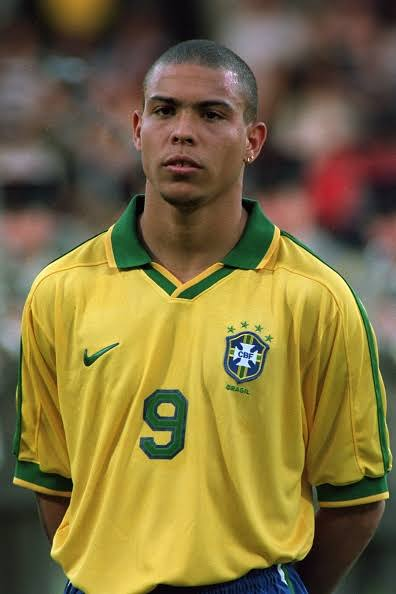

Ronaldo Luís Nazário de Lima - "The Phenomenon"
โรนัลโด้ นาซาริโอ (Ronaldo R9) ได้รับการยกย่องว่าเป็นหนึ่งในกองหน้าที่เก่งกาจและทรงพลังที่สุดในประวัติศาสตร์โลกฟุตบอล ด้วยความเร็วระดับปีศาจ การสับขาหลอกอันเป็นเอกลักษณ์ และการจบสกอร์ที่เฉียบคมจนได้รับฉายาว่า "โอ ฟีโนมีนอน" (The Phenomenon) หรือปรากฏการณ์ ซึ่งเป็นแรงบันดาลใจให้กับกองหน้ารุ่นหลังทั่วโลก
| วันเกิด | 18 กันยายน 1976 (กรุงริโอ เด จาเนโร, บราซิล) |
| ตำแหน่ง | กองหน้าตัวเป้า (Centre-Forward) |
| ฉายาในวงการ | โล้นทองคำ, R9, O Fenômeno |
| สโมสร (Club) | ปีที่ค้าแข้ง | ลงเล่น | ประตู |
|---|---|---|---|
| PSV Eindhoven | 1994 - 1996 | 57 | 54 |
| FC Barcelona | 1996 - 1997 | 49 | 47 |
| Inter Milan | 1997 - 2002 | 99 | 59 |
| Real Madrid (CR9/R9) | 2002 - 2007 | 177 | 104 |